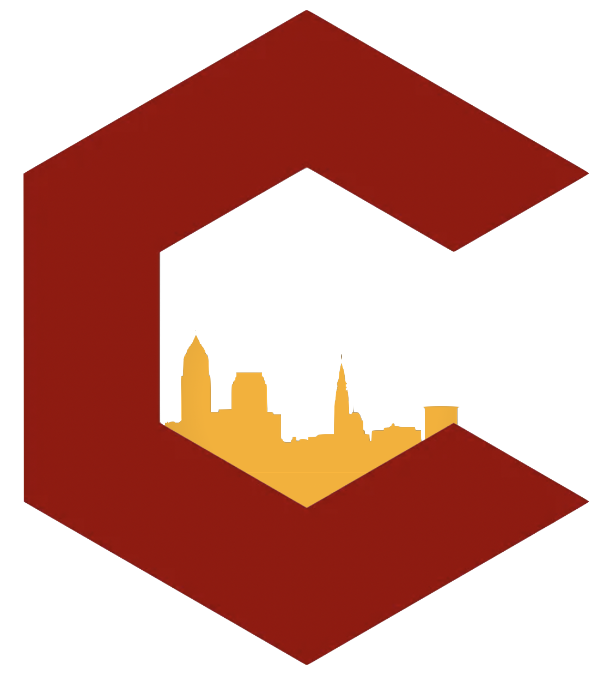

Sixth City Dynasty Football
- About
- Rules
- Franchises
- Bowls
- History
- Sleeper
The Sixth City Dynasty Football League was founded in 2021 as a branch off
of a standard redraft league with origins in the Sigma Phi Epsilon Ohio
Zeta chapter. Rooted in Cleveland, 6C is host to members that have now
dispersed throughout the US. What began as a group of fraternity buddies
coming together to enjoy the game of football has now evolved into a
large-scale dynasty league, complete with a full history of rivalries,
narratives, and statistics.